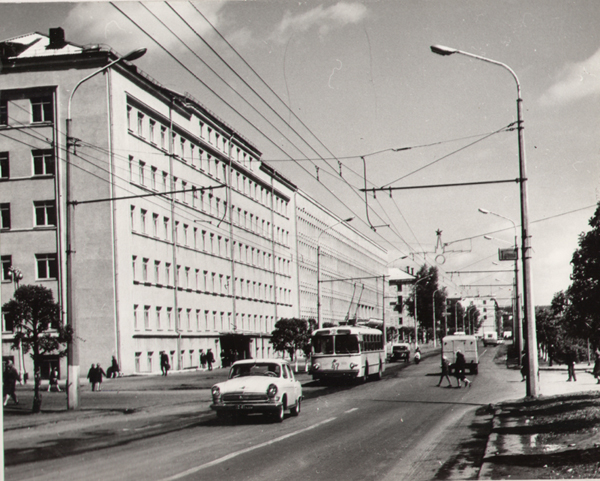
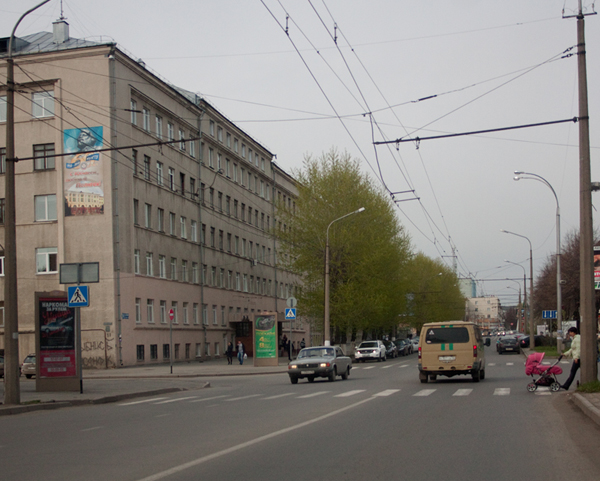

Как человек, увлёкшийся старыми фотографиями Кемерова, да к тому же не очень далекий от интернет-разработки и любительской фотографии, не мог не попробовать реализовать одну идею.


Улица 50 лет Октября. Какой она была и какой стала.
Видно как расширили проезжую часть, вымахали карагачи (это же вроде карагачи?), жизнь стала цветной и радостной.
В процессе фотографирования было непросто подобрать фокусное, попробовал исправить огрехи позже в графическом редакторе (отсюда инкассаторская «ГАЗель» шире чем надо).
Но в целом надеюсь будет интересно.